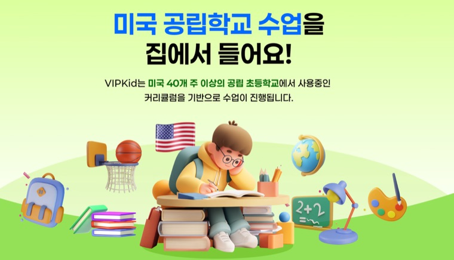
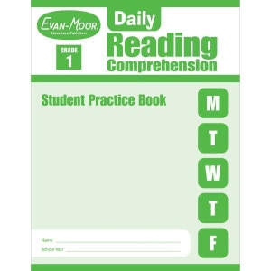
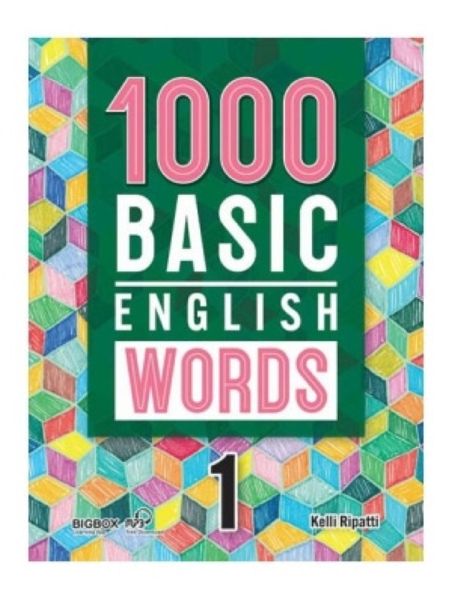
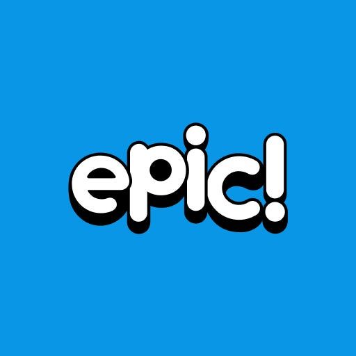
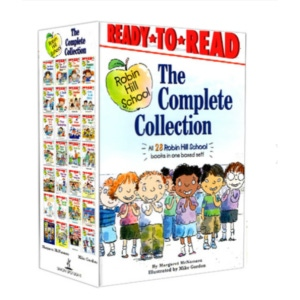
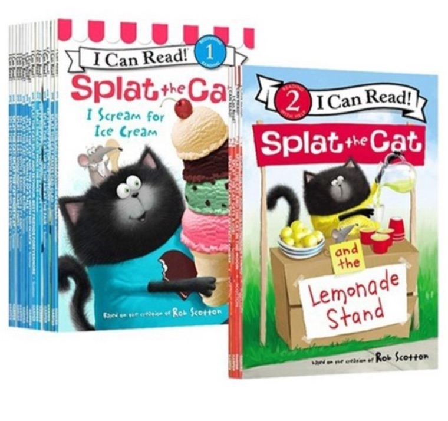
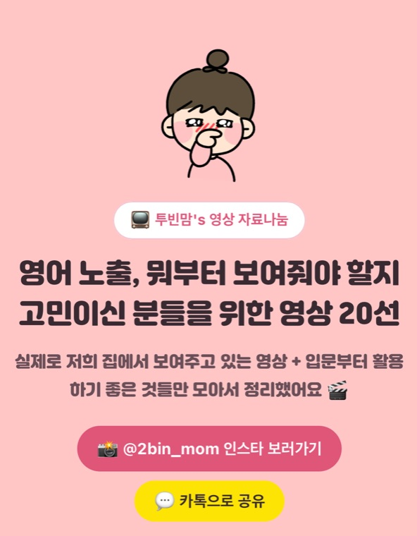

🇺🇸 투빈맘's 엄마표영어 자료나눔
🇺🇸 투빈맘's 엄마표영어 자료나눔
투빈맘's 엄마표영어💖
로드맵 (초3 경빈)
영어만 쏙 뽑아서 시기별로 정리했어요.
7세 하반기부터 초3 여름방학까지, 실제로 걸어온 길 그대로예요
🇺🇸 투빈맘's 엄마표영어 자료나눔
영어만 쏙 뽑아서 시기별로 정리했어요.
7세 하반기부터 초3 여름방학까지, 실제로 걸어온 길 그대로예요
만 3세 무렵 한글 발음 문제로 영어 노출을 멈췄다가, 언어 감각이 자리 잡은 7세 11월에 다시 천천히 시작했어요. 정해진 교재 없이 흘려듣기와 영상 노출로 귀를 여는 시기예요.
7세엔 '노출'이 전부였다면, 초1부터는 파닉스로 소리를 익히고 꾸준한 학습 루틴이 자리 잡은 시기예요. 1학기는 시작기, 2학기는 확립기, 겨울방학은 집중듣기→낭독으로 몰입한 시기였어요.


듣기 중심에서 본격적으로 읽기·쓰기 감각을 익힌 시기예요. 여름방학엔 폴리 레벨테스트 합격까지 해냈지만, 합격 후 슬럼프가 찾아와 루틴을 유연하게 재조정했어요.

초3이 되며 수학 진도에 더 집중하게 되면서, 영어는 새 교재를 크게 늘리기보다 있는 루틴을 유지하는 쪽으로 갔어요. 라이팅·스피킹을 연결하는 패드 학습을 새로 더한 시기예요.



수학에 집중하는 동안 영어를 거의 내려놓다시피 했더니, 처음 해본 AR 검사에서 1년째 제자리걸음인 걸 알게 됐어요. 그래서 이번 여름방학은 멈췄던 읽기(집중듣기·낭독)를 다시 시작하는 데 집중하고 있어요.


